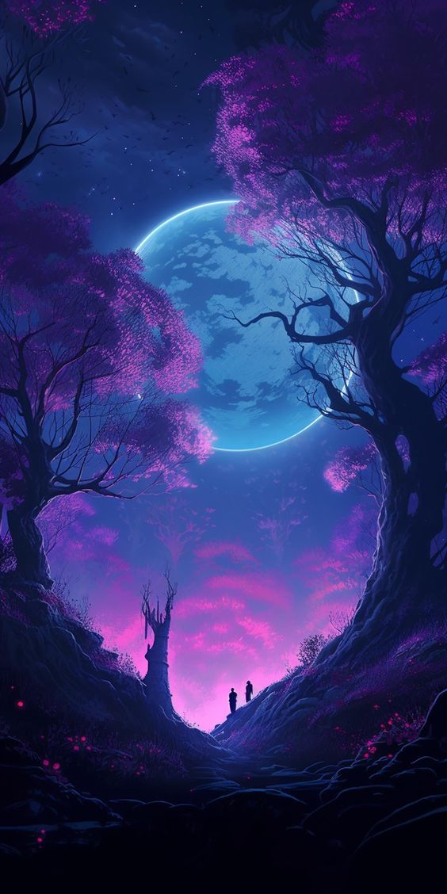
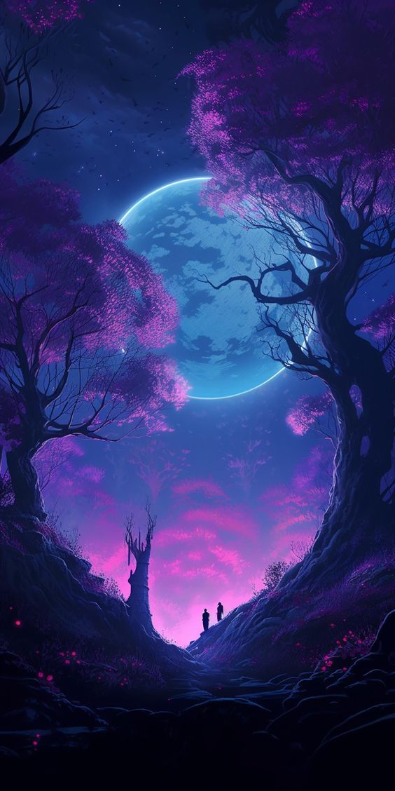

What exactly causes dreams? I am referring to Rapid Eye Movement (REM) sleep, not ambitions. There are various types of dreams – dreams that arise from stress (hopefully just a few weeks before exams), dreams that arise from PTSD (Post Traumatic Stress Disorder), lucid dreams, precognitive dreams, dreams that let you lose track of time, haunted dreams, and last but not the least dreams that cause sleeping paralysis. My first memorable dream was probably in class 1, and I was discussing this with my cousins; some had dreams they didn’t remember, and some didn’t even have any dreams.
 

Over the last few years, my dreams have become clearer. Not only can I concoct a thrilling story from some of my dreams, but sometimes I feel if I can think of so many inter-connected dependent events in my subconsciousness, what would happen if I was able to use 100% of my cognition? Unfortunately, we only use around 35% of our conscious memory at a given stage. Our mind only remembers stuff that it finds necessary to remember; I have no control over this phenomenon of remembering things at will. I find it very difficult to mug up stuff, and I envy those who can memorize stuff at will. Our way of perceiving things is different.


The most common dreams that have been reported across the world are semi-haunted and stressful. I have experienced all sorts of dreams, even precognition. The most common of my dreams has been my failure to reach school on time, but I rarely missed school in real life, maybe two times in a lifetime. The second most common one is I am having an exam, especially some English or Hindi exam, the next day, and I have to read and remember what each of the characters did, along with their name, and probably their credit card numbers too (?) I mean, who does that? This was probably because of the severe punishment (we come from a generation when beating by teachers was legally allowed) for missing unnecessary details of a useless chapter that doesn’t have value, just redundant facts to be memorized and vomited in exams. Even anime have more thrilling stories that give you life lessons. This is simple PTSD.

The same school gives me lucid memories more often than others. I have a nap, and in two hours, I have lived so much (maybe a full day of any class chosen randomly between 6 to 11). Memories are deceiving; what is concrete are facts. I didn't like school that much until I left it. Those subtle memories of me returning home with my pals, going to coaching, and discussing life on the way home have been etched in my soul. I have some of the best friends from school whom I still cherish to date. I’m not sure why the dream comes in a particular dark-tint color (of evening hue), maybe because I don’t remember much about my past, and things are projected in a different dimension, making these common dreams very lucid. Every time I sleep, I wish I had dreams that kept me in the past when things were so-called simple, my favorite school days. These dreams clear my mind and give me a direction to think positively. So, timelines in dreams can be pretty messed up. Somedays, I sleep only 30 minutes and see content worth 5-6 hours (at least what it feels like), and some days, I sleep for 12 hours and don’t see a dream at all. Though this is rare, I have never had the privilege of sleeping 12 hours continuously, though I may be in bed for that time.


Coming to think of haunted dreams, where dreams are particularly eerie, I don’t have much. When I was a kid, I used to see all kinds of ghost movies and had haunted dreams more often, but now I have not watched them (for 15 years?) for good reasons, and I am devoid of such dreams.
As time passed by, I often had new ideas come into my dreams, and in most cases, they worked like a charm. As if my subconscious is giving me the solution to a particular problem I have been thinking about for days, if not weeks. Though rare, these kinds of dreams are a blessing in disguise.

Precognition is a strange phenomenon. I find it intriguing that the human brain can do much more than we see in general. The continuous input to the brain and its simultaneous processing of it makes it a very powerful future visualizer. If a model can see everything that is happening in the world for a very long time, I feel that it can even predict the future to some extent. In my case, and most of the people with whom I have shared this, the dreams take form in real life within a six-month period. I had more than 70 instances where some part of the dream was replicated in the future, giving it a deja-vu-style phenomenon. This is one of the reasons I took a chance in GATE. Even before preparing for the GATE exam, I knew I would be in one of the best institutes in India; though I didn’t know the exact name and location, after coming here and seeing the places, I can relate exactly what I have seen in my dreams. The same goes for RKMVERI and Xavier. This is a really weird phenomenon, making me think I live in a simulation and have been in a loop for a long time.


I had my first instance of sleeping paralysis in class 4 when I was on the IIT KGP campus. I still remember I was trying to call my mom since I had a swimming class, but I couldn’t even open my mouth. I felt even a touch could wake me up, but I had to endure till my brain formed a proper connection with all my muscles. Finally, I woke up on time and went to swimming class which was scheduled for 5:30 p.m. This phenomenon didn’t re-appear until I was in class 11, and I had four instances of it in a month. When discussing with people, most said this happens to them too; it feels like someone is holding their body, like a spirit of some sort. I had it over thirty times now; the last two were vivid. I could analyze what exactly is happening. Firstly I thought it was the body that cannot move in the real world, but I was wrong. It happens when your conscious sense wakes up, and you don’t. This generally happens due to reflexes, protecting your body from subtle temperature/pressure changes in your body. Inputs from the real world make the dream form an environment similar to the real setting in which you sleep. Ultimately, you are in a dream, hearing and seeing things in a dream, which is influenced by inputs from the real world. It was believed that sanyasis could feel the environment in the dhyana state, keeping their eyes closed; it is somewhat similar to that. It might be creepy, but it is what it is. The only way to avoid this is to tell yourself that you will wake up; finally, you want to sleep properly for a long time, so sleep peacefully.
Some people also get dreams which they believe are instances from their past lives which have been etched into their souls. Several Bengali literature terminologies say that these phenomena also occur in real life. I don’t have much experience with them, nor do I get them, though there have been instances where I see a completely different place and later find that these places exist in real life in some way or another. I believe if you think a lot about something, it will get manifested in real life in some way or another.


Let us consider a hypothetical situation of sleep with two parallel worlds. The one that you are in, living and doing your job, and the other a similar one, which only activates after you fall asleep in this world and wake up in the other one. Now, time is relative; it doesn’t have to be exact clock hours; even in sleep, you lose track of reality and time. So, which world would you choose if the memories were saved in the dream world? If every time you sleep in this world, it starts right where you ended your dream in that world before entering this one? Wouldn’t you be confused about reality? What if the reality that we live in is a similar phenomenon? Aren’t there too many mysteries in this world that cannot be solved, and we are bound by simulation? We never know….


Credits: Edited with the help of Chandan Das.